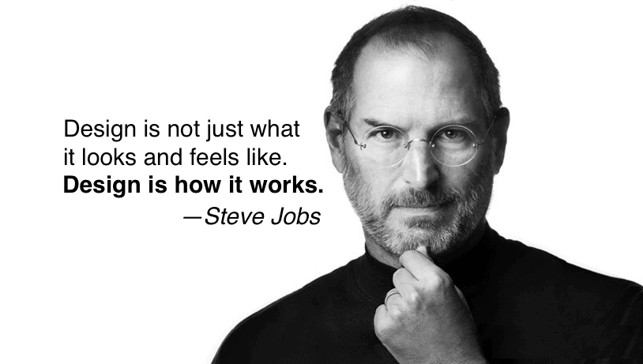

Biography
Steven Paul "Steve" Jobs was an American
technology enterpreneur and innovator.He
was the cofounder,chairman and CEO of
Apple Inc,CEO and largest shareholder of
Pixar Animation Studios and founder
chairman and Ceo of NeXT inc.Jobs is widely
recognized as pioneer of the microcomputer revolution
of the 1970s, along with Apple co-founder Steve
Wozniak. "Creative enterpreneur whose passion
for perfection and ferocious drive revolutionized six
industries:personal computers,animation movies,
music,phones,tablet computing and digital publishing"